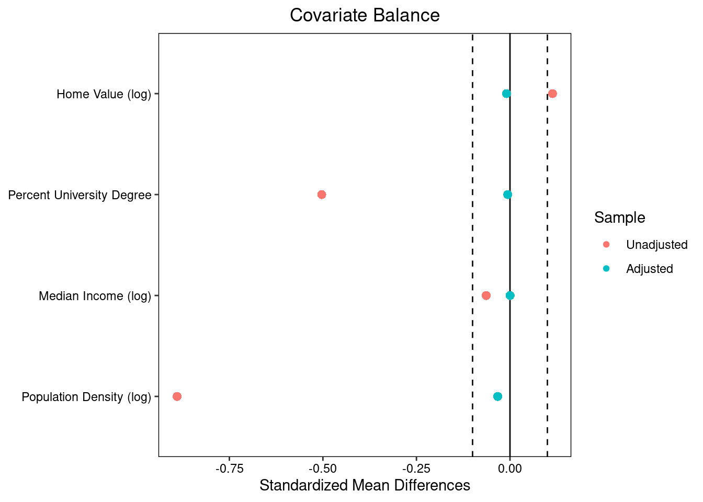
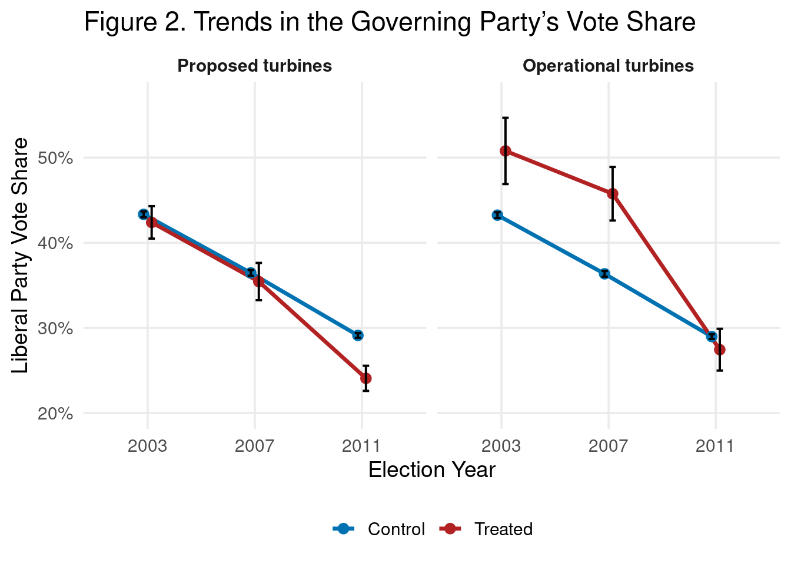

library(tidyverse)
library(here)
library(janitor)
library(jtools)
library(gtsummary)
library(gt)
library(MatchIt) # matching
library(cobalt) # balance + love plots
library(fixest) # fast fixed effects
library(scales) # plotting🌬️🗳 Assignment 2: Wind Turbines, Matching, and Difference-in-Differences
Replicate causal inference identification strategies in Stokes (2015)
Author
Melannie Moreno Rolón - EDS 241 / ESM 244 (DUE: 2/4/26)
Published
January 26, 2026
Assignment instructions
Working with classmates to troubleshoot code and concepts is encouraged. If you collaborate, list collaborators at the top of your submission.
All written responses must be written independently (in your own words).
Keep your work readable: Use clear headings and label plot elements thoughtfully.
Assignment submission (YOUR NAME): Melannie Moreno Rolón
Introduction
In this assignment you will be doing political weather forecasting except the “storms” we care about are electoral swings that might follow local wind turbine development.
In Stokes (2015), the idea is that a policy with diffuse benefits (cleaner electricity) can create concentrated local costs (turbines nearby), and those local opponents may “send a signal” at the ballot box (i.e., NIMBYISM). Your job is to use two statistical tools:
- Matching: Can we create a more apples-to-apples comparison between precincts that did vs. did not end up near turbine proposals?
- Fixed effects + Difference-in-Differences: Can we use repeated elections to estimate how within-precinct changes in turbine exposure relate to changes in incumbent vote share?
Learning goal: Replicate the matching and fixed effects analyses from study:
Stokes (2015): “Electoral Backlash against Climate Policy: A Natural Experiment on Retrospective Voting and Local Resistance to Public Policy.
- Study: Stokes (2015) - Article
- Data source: Dataverse-Stokes2015
NOTE: Replication of study estimates will be approximate. An alternative matching procedure and fixed effects estimation package are utilized in this assignment for illustration purposes.
Setup: Load libraries
- Load libraries (+ install if needed)
Part 1: Study Background
1A. Dive into the details of the study design and evaluation plan
Goal: Get familiar with the study setting, environmental issue, and policy under evaluation.
NOTE: Read over study to inform your response to the assignment questions. For this assignment we will skip-over sections that describe the Instrumental Variables identification strategy. We will cover instrumental variable designs weeks 6-7.
1A.Q1 Summarize the environmental policy issue, the outcome of interest, and the intervention being evaluated. Be sure to include a brief description of each of the following key elements of the study: unit of analysis, outcome, treatment, comparison group):
Response: This paper examines electoral backlash against climate policy by studying local resistance to wind energy projects in Ontario, Canada. The study uses a natural experiment created by the Green Energy Act to evaluate whether proximity to proposed or operational wind turbines led to electoral punishment of the incumbent provincial Liberal Party. The outcome of interest is incumbent vote share and voter turnout and was measured at the provincial electoral precinct level. The treatment is defined as precinct-level exposure to wind turbines, while the comparison group consists of similar precincts in wind-feasible districts without turbine exposure.
1A.Q2 Why might turbine proposals be correlated with baseline political preferences or rural areas? Provide 2 plausible mechanisms, and explain why that creates confounding.
Response: According to the study, turbine proposals may be correlated with baseline political preferences or rural areas for two reasons. First, wind turbines were more likely to be sited in rural areas due to land availability and low population density, and rural precincts tend to have different political preferences and lower baseline support for the incumbent Liberal Party. Second, developers may have anticipated less resistance in communities with lower political influence or mobilization capacity, leading turbines to be placed in areas already predisposed to oppose the government. Both mechanisms create confounding because the observed electoral backlash could reflect pre-existing political preferences rather than a direct causal effect of turbine exposure.
1B. Break down the causal inference strategy and identify threats to identification:
1B.Q1 What is the key identifying assumption for a fixed effects / Difference-in-Difference design? Explain how this assumption when satisfied provides evidence of causal effect:
Response: The key identifying assumption of a fixed effects / difference-in-differences design is the parallel trends assumption. This assumption states that, in the absence of treatment, treated and control precincts would have followed the same trend in electoral outcomes over time. When this assumption is satisfied, any divergence in outcomes after treatment can be attributed to the treatment itself rather than to pre-existing differences between groups, and thus, provide evidence of a causal effect.
1B.Q2 What is the reason for using a fixed effects approach from a causal inference perspective? Summarize within the context of study (in your own words).
Response: From a causal inference perspective, the fixed effects approach is used to control for time-invariant characteristics of precincts that could confound the relationship between wind turbines and voting behavior. Examples of these characteristics are political preferences, the rural setting, or socioeconomic differences.
1B.Q3 What part of the SUTVA assumption is most likely violated in the context of this study design (and why)?
Response: The assumption of SUTVA most likely to be violated is the no-interference assumption. The no-interference assumption states that the treatment status of one unit does not affect the outcomes of other units. In this study, voters in precincts without turbines may still be affected by nearby turbines through visual exposure, noise, or local political mobilization. Therefore, outcomes in control precincts could be influenced by the treatment in neighboring precincts.
1B.Q4 Why does spillover matter when estimating an unbiased treatment effect?
Response: Spillover matters because if control units are indirectly affected by treatment, the estimated difference between treated and control groups will be biased toward zero. This makes the treatment effect appear smaller than it actually is, and the control group is no longer a valid counterfactual for what would have happened in the absence of treatment.
1B.Q5 How do the authors assess the risk of spillovers, and what analytic choice do they make to attempt to mitigate the risk that spillover biases the causal estimate?
Response: The authors assessed the risk of spillover by estimating treatment effects at increasing distance bands from wind turbines up to 5 km, and showing that vote share declines persist up to about 3 km. To mitigate the risk that spillover biases the causal estimate, the researchers excluded precincts within 6 km of turbines from the control group when estimating distance-related effects.
Part 2: Matching
We will start by evaluating the 2007 survey (cross-sectional) data. Treatment is defined by whether a precinct is near a turbine proposal (within 3 km).
Goal: Match precincts using pre-treatment covariates and then estimate the effect of proposed wind turbines on incumbent vote share.
2A. Load data for matching
- Read in data file
stokes15_survey2007.csv - Code
precinct_idanddistrict_idas factors - Take a look at the data
# Read in data file and code `precinct_id` and `district_id` as factors
match_data <- read_csv(here("data", "stokes15_survey2007.csv")) %>%
mutate(precinct_id = factor(precinct_id),
district_id = factor(district_id))
# Take a look at the data
glimpse(match_data) Rows: 5,973
Columns: 16
$ precinct_id <fct> 10.001.10.1., 10.002.10.1., 10.003.10.2., 10.004.…
$ district_id <fct> 10, 10, 10, 10, 10, 10, 10, 10, 10, 10, 10, 10, 1…
$ change_liberal <dbl> 0.08456503, 0.13210655, 0.18208628, 0.15422953, 0…
$ proposed_turbine_3km <dbl> 0, 0, 0, 0, 0, 0, 0, 0, 0, 0, 0, 0, 0, 0, 0, 0, 0…
$ log_wind_power <dbl> 6.645013, 6.295443, 6.310994, 6.654216, 6.104257,…
$ log_home_val_07 <dbl> 12.27993, 12.28202, 12.28125, 12.26825, 12.37316,…
$ p_uni_degree <dbl> 0.19225123, 0.22043792, 0.22079883, 0.12727273, 0…
$ log_median_inc <dbl> 10.286860, 10.309722, 10.309530, 10.147100, 10.28…
$ log_pop_denc <dbl> -1.79255050, -3.49902997, -0.31878753, -0.4490713…
$ mindistlake <dbl> 0.0000000, 1.3834536, 2.6037725, 0.0000000, 0.953…
$ mindistlake_sq <dbl> 0.00000000, 1.91394392, 6.77963136, 0.00000000, 0…
$ longitude <dbl> -81.67554, -81.64687, -81.47904, -81.69842, -81.3…
$ long_sq <dbl> 6670.894, 6666.211, 6638.833, 6674.633, 6616.192,…
$ latitude <dbl> 45.30674, 45.25790, 45.22889, 45.20118, 45.17166,…
$ lat_sq <dbl> 2052.701, 2048.277, 2045.653, 2043.146, 2040.479,…
$ long_lat <dbl> -3700.453, -3695.166, -3685.207, -3692.865, -3674…2A.Q1 Intuition check: Why match? Explain rationale for using this method.
Response: Matching is used here to make sure that treated and control precincts are comparable on observed pre-treatment characteristics that could influence voting behavior. Since we will be balancing these covariates, matching will reduce confounding and make differences in incumbent vote share more plausibly attributable to proximity to turbine proposals rather than other underlying differences between precincts.
2B. Check imbalance (before matching)
- Create a covariate balance table comparing treated and control precincts
- Treatment indicator:
proposed_turbine_3km - Include pre-treatment covariates:
log_home_val_07,p_uni_degree,log_median_inc,log_pop_denc - Use the
tbl_summary()function from the{gtsummary}package.
# Covariate balance table
match_data %>%
select(
proposed_turbine_3km, log_home_val_07, p_uni_degree, log_median_inc,
log_pop_denc
) %>%
tbl_summary(
by = proposed_turbine_3km,
statistic = list(
all_continuous() ~ "{mean} ({sd})",
all_categorical() ~ "{n} ({p}%)"
)
) %>%
modify_header(label ~ "**Covariate**") %>%
modify_spanning_header(c("stat_1", "stat_2") ~ "**Group**")| Covariate |
Group
|
|
|---|---|---|
| 0 N = 5,6191 |
1 N = 3541 |
|
| log_home_val_07 | 12.26 (0.37) | 12.29 (0.29) |
| p_uni_degree | 0.17 (0.12) | 0.13 (0.09) |
| log_median_inc | 10.32 (0.22) | 10.31 (0.19) |
| log_pop_denc | 5.12 (2.40) | 3.54 (1.78) |
| 1 Mean (SD) | ||
2B.Q1 Summarize the table output: Which covariates look balanced/imbalanced?
Response: log_pop_denc and p_uni_degree appear more imbalanced across treated and control precincts, while log_home_val_07 and log_median_inc appear to be more balanced.
2B.Q2 Describe in your own words why these covariates might be expected to confound the treatment estimate:
Response (2-4 sentences): These covariates may confound the treatment estimate because they are related to turbine siting and voting behavior. Differences in population density, education, income, and home values reflect underlying socioeconomic and political characteristics that could influence incumbent vote share independent of turbine exposure.
2B.Q3 Intuition check: What type of data do you need to conduct a matching analysis?
Response: Conducting a matching analysis requires cross-sectional or pre-treatment data which includes a treatment indicator, pre-treatment covariates, and an outcome variable.
Conduct matching estimation using the {MatchIt} package:
Learning goals:
- Approximate the Mahalanobis matching method used in Stokes (2015)
- Implement another common matching approach called
propensity score matching
NOTE: In the replication code associated with Stokes (2015) the {AER} package is used for Mahalanobis matching. In this assignment we use the {MatchIt} package. The results are comparable but will not be exactly the same.
2C. Mahalanobis nearest-neighbor matching
- Conduct Mahalanobis matching
- Use nearest-neighbor match without replacement using Mahalanobis distance
- Use 1-to-1 matching (match one control unit to each treatment unit)
- Extract the matched data using
match.data()
set.seed(2412026)
match_model <- matchit(
formula = proposed_turbine_3km ~ log_home_val_07 + p_uni_degree + log_median_inc +
log_pop_denc,
data = match_data,
method = "nearest", # Nearest neighbor matching
distance = "mahalanobis", # Mahalanobis distance
ratio = 1, # Match one control unit to one treatment unit (1:1 matching)
replace = FALSE # Control observations are not replaced
)
# Extract matched data
matched_data <- match.data(match_model)
Call:
matchit(formula = proposed_turbine_3km ~ log_home_val_07 + p_uni_degree +
log_median_inc + log_pop_denc, data = match_data, method = "nearest",
distance = "mahalanobis", replace = FALSE, ratio = 1)
Summary of Balance for All Data:
Means Treated Means Control Std. Mean Diff. Var. Ratio
log_home_val_07 12.2948 12.2620 0.1138 0.5941
p_uni_degree 0.1257 0.1688 -0.5032 0.4916
log_median_inc 10.3096 10.3219 -0.0636 0.7581
log_pop_denc 3.5398 5.1192 -0.8897 0.5474
eCDF Mean eCDF Max
log_home_val_07 0.0382 0.0881
p_uni_degree 0.1032 0.1769
log_median_inc 0.0355 0.0750
log_pop_denc 0.2099 0.3713
Summary of Balance for Matched Data:
Means Treated Means Control Std. Mean Diff. Var. Ratio
log_home_val_07 12.2948 12.2975 -0.0093 1.0063
p_uni_degree 0.1257 0.1262 -0.0060 1.0485
log_median_inc 10.3096 10.3096 0.0002 1.0403
log_pop_denc 3.5398 3.5982 -0.0329 0.9784
eCDF Mean eCDF Max Std. Pair Dist.
log_home_val_07 0.0075 0.0282 0.1334
p_uni_degree 0.0088 0.0367 0.1642
log_median_inc 0.0073 0.0395 0.1225
log_pop_denc 0.0109 0.0508 0.1485
Sample Sizes:
Control Treated
All 5619 354
Matched 354 354
Unmatched 5265 0
Discarded 0 02C.Q1 Using the summary() output: Which covariate had the largest and smallest Std. Mean Diff. before matching. Next, compare largest/smallest Std. Mean Diff. after matching.
Response: log_pop_denc had the largest Std. Mean Diff. before matching, while log_median_inc had the smallest. After matching, log_pop_denc still had the largest Std. Mean Diff and log_median_inc had the smallest.
2D. Create a “love plot” using love.plot() ❤️
- Plot mean differences for data before & after matching across all pre-treatment covariates
- This is an effective way to evaluate how effective matching was at achieving balance.
- Make a love plot of standardized mean differences (SMDs) before vs after matching.
- Include a threshold line at 0.1.
- In love plot display
mean.diffs
new_names <- data.frame(
old = c("log_home_val_07", "p_uni_degree", "log_median_inc", "log_pop_denc"),
new = c("Home Value (log)", "Percent University Degree",
"Median Income (log)", "Population Density (log)"))
# Love plot
love.plot(match_model,
stats = "mean.diffs",
thresholds = c(m = 0.1),
var.names = new_names)
2D.Q1 Interpret the love plot in your own words:
Response: The love plot shows a significant imbalance in population density and educational attainment before matching, where the standardized mean differences are well above the 0.1 threshold. After matching, all covariates are well balanced and fall within the threshold, therefore, the matching procedure successfully reduced observable differences between treated and control precincts.
Propensity score matching
2E. Propensity Score Matching (PSM)
- Estimate 1:1 nearest-neighbor Propensity Score Matching
- Same code as above except change
distance = "logit"
set.seed(2412026)
propensity_scores <- matchit(
formula = proposed_turbine_3km ~ log_home_val_07 + p_uni_degree + log_median_inc +
log_pop_denc,
data = match_data,
method = "nearest", # Nearest neighbor matching
distance = "logit", # logit distance
ratio = 1, # Match one control unit to one treatment unit (1:1 matching)
replace = FALSE # Control observations are not replaced
)Create table displaying covariate balance using cobalt::bal.tab()
Use bal.tab() to report balance before and after matching.
Balance Measures
Type Diff.Adj
distance Distance 0.0001
log_home_val_07 Contin. 0.0205
p_uni_degree Contin. 0.0457
log_median_inc Contin. -0.0042
log_pop_denc Contin. -0.0365
Sample sizes
Control Treated
All 5619 354
Matched 354 354
Unmatched 5265 02E.Q1 Compare Mahalanobis vs propensity score matching. Which method did a better job at achieving balance?
Response: Propensity score matching achieved a slightly better balance, since the adjusted standardized mean differences are consistently very small across all covariates and had a slightly tighter balance than Mahalanobis matching.
2F. Estimate an effect in the matched sample
Using the matched data (Mahalanobis method), estimate the effect of treatment on the change in incumbent vote share (change_liberal).
reg_match <- lm(
change_liberal ~ proposed_turbine_3km,
data = matched_data,
weights = matched_data$weights)
summ(reg_match, model.fit = FALSE)| Observations | 708 |
| Dependent variable | change_liberal |
| Type | OLS linear regression |
| Est. | S.E. | t val. | p | |
|---|---|---|---|---|
| (Intercept) | -0.07 | 0.01 | -10.96 | 0.00 |
| proposed_turbine_3km | -0.06 | 0.01 | -7.25 | 0.00 |
| Standard errors: OLS |
2F.Q1 Have you identified a causal estimate using this approach: Why or why not?
Response: This approach identified a causal estimate that depends on satisfying the matching assumptions. The analysis reduces confounding from observed pre-treatment covariates by matching treated and control precincts, and under the assumption that there are no unobserved confounders, the estimated effect is −0.06. This would be the causal effect of proximity to a turbine proposal on incumbent vote share.
2F.Q2 When using a matching method, what is the main threat to causal identification?
Response: The main threat to causal identification when using the matching method is the possibility of having an unobserved confounding. If there are factors left unmeasured that could affect turbine siting and voting behavior, the treatment estimate may be biased.
2F.Q3 Describe why the treatment estimate represents the Average Treatment for the Treated (ATT) and explain why this is the case relative to estimation of the Average Treatment Effect (ATE).
Response: The treatment estimate represents the Average Treatment Effect on the Treated (ATT) because the matching procedure pairs each treated precinct with similar control precincts and then estimates the effect for those treated units. The control units are also selected to resemble the treated group, where the estimate reflects the effect of treatment on precincts that actually experienced turbine exposure.
Part 3: Panel Data, Fixed Effects, and Difference-in-Difference
Data source: Dataverse-Stokes2015
3A: Read in the panel data + code variables precinct_id and year as factors
panel_data <- read_csv(here("data", "Stokes15_panel_data.csv")) %>%
mutate(precinct_id = factor(precinct_id),
year = factor(year))
glimpse(panel_data)Rows: 18,558
Columns: 14
$ precinct_id <fct> 10.001.10.1., 10.001.10.1., 10.001.10.1., 10.002.1…
$ year <fct> 2003, 2007, 2011, 2003, 2007, 2011, 2003, 2007, 20…
$ perc_lib <dbl> 0.4341600, 0.2162162, 0.3007812, 0.4341600, 0.1686…
$ proposed_turbine <dbl> 0, 0, 0, 0, 0, 0, 0, 0, 0, 0, 0, 0, 0, 0, 0, 0, 0,…
$ operational_turbine <dbl> 0, 0, 0, 0, 0, 0, 0, 0, 0, 0, 0, 0, 0, 0, 0, 0, 0,…
$ log_pop <dbl> 5.8077175, 3.9076310, 3.8643798, 5.1978116, 2.1535…
$ log_pop_denc <dbl> -1.4725813, -1.2777149, -1.7925505, -2.0824872, 0.…
$ log_median_inc <dbl> 9.955869, 9.754840, 10.286860, 9.956546, 9.699630,…
$ log_home_val <dbl> 11.81378, 12.27993, 12.79206, 11.86941, 12.28202, …
$ avg_home_val <dbl> 135100.7, 215330.9, 359353.6, 142830.1, 215781.7, …
$ unemploy_rate <dbl> 5.258431, 11.205697, 12.797498, 5.858203, 14.30746…
$ p_uni_degree <dbl> 0.25098436, 0.19586050, 0.19225123, 0.26564499, 0.…
$ p_immigrant <dbl> 0.15281480, 0.11723295, 0.12858559, 0.16840506, 0.…
$ p_housing_own <dbl> 0.6654168, 0.9334555, 0.9410068, 0.6665852, 0.9176…# HINT: Try running `tabyl(panel_data$year)`. Review article to make sense of the row numbers (n).
tabyl(panel_data$year) panel_data$year n percent
2003 6186 0.3333333
2007 6186 0.3333333
2011 6186 0.33333333A.Q1: Why are there 18,558 rows in panel_data?
Response: The dataset is structured in long format. Each precinct appears once for each election year. There are 6,186 precincts observed in three election years (2003, 2007, and 2011), therefore, the dataset contains 18,558 rows in total.
[1] 3 # There are 3 years included in the panel (2003, 2007, 2011).
# How many precincts are there?
n_distinct(panel_data$precinct_id)[1] 61863A.Q2: How many unique precincts are ever treated (i.e., proposed & operational)?
Response: There are 184 unique precincts that are ever treated. Of these, 52 precincts eventually have an operational turbine.
panel_data %>%
group_by(precinct_id) %>%
summarise(
ever_proposed = any(proposed_turbine == 1, na.rm = TRUE),
ever_operational = any(operational_turbine == 1, na.rm = TRUE),
.groups = "drop") %>%
summarise(
n_ever_proposed = sum(ever_proposed),
n_ever_operational = sum(ever_operational))# A tibble: 1 × 2
n_ever_proposed n_ever_operational
<int> <int>
1 184 523B. Plot and evaluate parallel trends: Replicate Figure.2 (Stokes, 2015)
- Create indicators for whether each precinct is ever treated by 2011 (
treat_p,treat_o; separate indicator for proposals and operational turbines). - Plot mean incumbent vote share by year for treated vs control precincts (with 95% CIs).
- Facet by turbine type (proposed & operational)
Step 1: Prepare data
trends_data <- panel_data %>%
group_by(precinct_id) %>%
mutate(
treat_p = as.integer(any(proposed_turbine == 1, na.rm = TRUE)), # ever proposed (in any year)
treat_o = as.integer(any(operational_turbine == 1, na.rm = TRUE))) %>% # ever operational (in any year)
ungroup() %>%
pivot_longer(c(treat_p, treat_o),
names_to = "turbine_type", values_to = "treat") %>%
mutate(
turbine_type = factor(turbine_type,
levels = c("treat_p", "treat_o"),
labels = c("Proposed turbines", "Operational turbines")),
status = if_else(treat == 1, "Treated", "Control"),
year = factor(year))Step 2: Create trends plot
pd <- position_dodge(width = 0.15)
trends_data %>%
group_by(turbine_type, status, year) %>%
summarise(
mean = mean(perc_lib, na.rm = TRUE),
n = sum(!is.na(perc_lib)),
se = sd(perc_lib, na.rm = TRUE) / sqrt(n),
ci = qt(.975, df = pmax(n - 1, 1)) * se,
.groups = "drop") %>%
ggplot(aes(year, mean, color = status, group = status)) +
geom_line(position = pd, linewidth = 1.2) +
geom_point(position = pd, size = 2.6) +
geom_errorbar(
aes(ymin = mean - ci, ymax = mean + ci),
position = pd, width = .12, linewidth = .7, color = "black") +
facet_wrap(~ turbine_type, nrow = 1) +
scale_color_manual(values = c(Control = "#0072B2", Treated = "#B22222")) +
scale_y_continuous(labels = percent_format(accuracy = 1)) +
coord_cartesian(ylim = c(.20, .57)) +
labs(
title = "Figure 2. Trends in the Governing Party’s Vote Share",
x = "Election Year",
y = "Liberal Party Vote Share",
color = NULL) +
theme_minimal(base_size = 14) +
theme(
panel.grid.minor = element_blank(),
legend.position = "bottom",
strip.text = element_text(face = "bold"))
3B.Q1: Write a short paragraph assessing the parallel trends assumption for each outcome.
Response (4-6 sentences): I assessed the parallel trends assumption by comparing trends in Liberal vote share for treated and control precincts prior to treatment in the plot. In the proposed turbines panel, the treated and control precincts follow similar trends between 2003 and 2007. This trend suggests that the parallel trends assumption is plausible for this outcome. In the operational turbines panel, the treated precincts start with higher Liberal vote share in 2003, but the decline from 2003 to 2007 is broadly similar in direction to that of control precincts. Although their levels differ, the pre-treatment trends do not show clear divergence prior to 2007. Overall, the figure provides visual support for the parallel trends assumption, but the evidence is stronger for proposed turbines than for operational turbines.
Estimating Fixed Effects Models (DiD) for proposals
\[ \text{Y}_{it} = \alpha_0 + \beta \cdot (\text{proposed_turbine}_{it}) + \gamma_i + \delta_t + \varepsilon_{it} \]
- \(Y_{it}\) is the vote share for the Liberal Party in precinct i in time t
- \(\beta\) is the treatment effect of a turbine being proposed within a precinct
- \(\gamma_i\) is the precinct fixed effect
- \(\delta_t\) is the year fixed effect
Example 1: Randomly sample 40 precincts
- To illustrate the “dummy variable method” of estimating fixed effects using the the general
lm()function we are going to randomly sample 40 precincts (20 “treated” precincts with proposed turbines). - If we attempted to use this approach with the full sample estimating all 6185 (n-1) precinct-level coefficients is impractical (it would take a long time).
set.seed(40002026)
precinct_frame <- panel_data %>%
group_by(precinct_id) %>%
summarise(
proposed_turbine_any = as.integer(any(proposed_turbine == 1, na.rm = TRUE)),
.groups = "drop"
)
ids_40 <- precinct_frame %>%
group_by(proposed_turbine_any) %>%
slice_sample(n = 20) %>%
ungroup() %>%
select(precinct_id)
sample_40_precincts <- panel_data %>%
semi_join(ids_40, by = "precinct_id")3C: Estimate a fixed effects model using lm() with fixed effects added for precinct and year using the sample of 40 precincts just created.
model1_ff <- lm(perc_lib ~ proposed_turbine + precinct_id + year,
data = sample_40_precincts)
summ(model1_ff, model.fit = FALSE, digits = 3)| Observations | 120 |
| Dependent variable | perc_lib |
| Type | OLS linear regression |
| Est. | S.E. | t val. | p | |
|---|---|---|---|---|
| (Intercept) | 0.275 | 0.050 | 5.460 | 0.000 |
| proposed_turbine | -0.057 | 0.031 | -1.858 | 0.067 |
| precinct_id10.115s.10.84. | 0.166 | 0.069 | 2.402 | 0.019 |
| precinct_id105.038.105.45. | 0.053 | 0.069 | 0.765 | 0.447 |
| precinct_id14.149.14.79. | 0.208 | 0.070 | 2.976 | 0.004 |
| precinct_id14.168.14.82. | 0.192 | 0.070 | 2.749 | 0.007 |
| precinct_id18.003.18.1. | 0.121 | 0.070 | 1.738 | 0.086 |
| precinct_id18.033.18.19. | -0.002 | 0.072 | -0.034 | 0.973 |
| precinct_id21.126.21.179. | 0.204 | 0.069 | 2.950 | 0.004 |
| precinct_id22.061.22.60. | 0.213 | 0.070 | 3.047 | 0.003 |
| precinct_id22.124.22.52. | 0.156 | 0.070 | 2.230 | 0.029 |
| precinct_id22.137.22.193. | 0.179 | 0.069 | 2.590 | 0.011 |
| precinct_id22.158.22.203. | 0.165 | 0.070 | 2.357 | 0.021 |
| precinct_id22.209.22.172. | 0.188 | 0.070 | 2.699 | 0.009 |
| precinct_id28.056.28.149. | -0.011 | 0.070 | -0.160 | 0.873 |
| precinct_id28.072.28.98. | 0.097 | 0.069 | 1.409 | 0.163 |
| precinct_id28.139.28.145. | 0.040 | 0.072 | 0.553 | 0.582 |
| precinct_id28.163.28.69. | 0.124 | 0.069 | 1.802 | 0.075 |
| precinct_id29.241.29.172. | 0.067 | 0.070 | 0.958 | 0.341 |
| precinct_id34.050.34.39. | 0.342 | 0.069 | 4.947 | 0.000 |
| precinct_id34.151.34.125. | 0.098 | 0.070 | 1.399 | 0.166 |
| precinct_id36.133.36.92. | 0.358 | 0.069 | 5.179 | 0.000 |
| precinct_id40.044.40.68. | 0.236 | 0.072 | 3.275 | 0.002 |
| precinct_id40.098.40.120. | 0.195 | 0.070 | 2.792 | 0.007 |
| precinct_id40.134.40.174. | 0.216 | 0.069 | 3.127 | 0.002 |
| precinct_id40.243.40.22. | 0.325 | 0.070 | 4.651 | 0.000 |
| precinct_id40.244.40.46. | 0.178 | 0.070 | 2.543 | 0.013 |
| precinct_id55.228.55.180. | 0.130 | 0.069 | 1.883 | 0.064 |
| precinct_id58.162.58.98. | 0.278 | 0.069 | 4.024 | 0.000 |
| precinct_id58.232.58.231. | 0.203 | 0.069 | 2.940 | 0.004 |
| precinct_id67.141.67.123. | 0.022 | 0.070 | 0.311 | 0.757 |
| precinct_id69.073.69.35. | 0.070 | 0.069 | 1.015 | 0.313 |
| precinct_id70.081.70.44. | 0.062 | 0.069 | 0.899 | 0.372 |
| precinct_id70.135.70.105. | 0.441 | 0.069 | 6.388 | 0.000 |
| precinct_id70.221.70.155. | 0.247 | 0.069 | 3.576 | 0.001 |
| precinct_id73.248.73.180. | 0.187 | 0.070 | 2.672 | 0.009 |
| precinct_id73.251.73.180. | 0.204 | 0.070 | 2.927 | 0.005 |
| precinct_id87.017.87.58. | 0.127 | 0.069 | 1.836 | 0.070 |
| precinct_id87.053.87.68. | 0.214 | 0.069 | 3.100 | 0.003 |
| precinct_id87.213.87.24. | 0.033 | 0.070 | 0.469 | 0.641 |
| precinct_id98.009.98.12. | 0.129 | 0.069 | 1.868 | 0.066 |
| year2007 | -0.045 | 0.019 | -2.364 | 0.021 |
| year2011 | -0.131 | 0.024 | -5.381 | 0.000 |
| Standard errors: OLS |
| Observations | 120 |
| Dependent variable | perc_lib |
| Type | OLS linear regression |
| Est. | S.E. | t val. | p | |
|---|---|---|---|---|
| (Intercept) | 0.275 | 0.085 | 3.247 | 0.002 |
| proposed_turbine | -0.057 | 0.039 | -1.465 | 0.147 |
| precinct_id10.115s.10.84. | 0.166 | 0.101 | 1.646 | 0.104 |
| precinct_id105.038.105.45. | 0.053 | 0.104 | 0.509 | 0.612 |
| precinct_id14.149.14.79. | 0.208 | 0.094 | 2.201 | 0.031 |
| precinct_id14.168.14.82. | 0.192 | 0.110 | 1.751 | 0.084 |
| precinct_id18.003.18.1. | 0.121 | 0.107 | 1.132 | 0.261 |
| precinct_id18.033.18.19. | -0.002 | 0.101 | -0.024 | 0.981 |
| precinct_id21.126.21.179. | 0.204 | 0.157 | 1.299 | 0.198 |
| precinct_id22.061.22.60. | 0.213 | 0.105 | 2.023 | 0.047 |
| precinct_id22.124.22.52. | 0.156 | 0.103 | 1.509 | 0.135 |
| precinct_id22.137.22.193. | 0.179 | 0.104 | 1.721 | 0.089 |
| precinct_id22.158.22.203. | 0.165 | 0.088 | 1.879 | 0.064 |
| precinct_id22.209.22.172. | 0.188 | 0.106 | 1.770 | 0.081 |
| precinct_id28.056.28.149. | -0.011 | 0.112 | -0.099 | 0.921 |
| precinct_id28.072.28.98. | 0.097 | 0.104 | 0.934 | 0.353 |
| precinct_id28.139.28.145. | 0.040 | 0.111 | 0.359 | 0.721 |
| precinct_id28.163.28.69. | 0.124 | 0.106 | 1.179 | 0.242 |
| precinct_id29.241.29.172. | 0.067 | 0.089 | 0.749 | 0.456 |
| precinct_id34.050.34.39. | 0.342 | 0.089 | 3.821 | 0.000 |
| precinct_id34.151.34.125. | 0.098 | 0.093 | 1.050 | 0.297 |
| precinct_id36.133.36.92. | 0.358 | 0.091 | 3.941 | 0.000 |
| precinct_id40.044.40.68. | 0.236 | 0.096 | 2.457 | 0.016 |
| precinct_id40.098.40.120. | 0.195 | 0.092 | 2.123 | 0.037 |
| precinct_id40.134.40.174. | 0.216 | 0.090 | 2.399 | 0.019 |
| precinct_id40.243.40.22. | 0.325 | 0.098 | 3.314 | 0.001 |
| precinct_id40.244.40.46. | 0.178 | 0.095 | 1.873 | 0.065 |
| precinct_id55.228.55.180. | 0.130 | 0.092 | 1.406 | 0.164 |
| precinct_id58.162.58.98. | 0.278 | 0.097 | 2.867 | 0.005 |
| precinct_id58.232.58.231. | 0.203 | 0.092 | 2.203 | 0.031 |
| precinct_id67.141.67.123. | 0.022 | 0.115 | 0.189 | 0.850 |
| precinct_id69.073.69.35. | 0.070 | 0.104 | 0.677 | 0.500 |
| precinct_id70.081.70.44. | 0.062 | 0.095 | 0.655 | 0.514 |
| precinct_id70.135.70.105. | 0.441 | 0.128 | 3.451 | 0.001 |
| precinct_id70.221.70.155. | 0.247 | 0.111 | 2.217 | 0.030 |
| precinct_id73.248.73.180. | 0.187 | 0.108 | 1.720 | 0.089 |
| precinct_id73.251.73.180. | 0.204 | 0.102 | 1.995 | 0.050 |
| precinct_id87.017.87.58. | 0.127 | 0.112 | 1.135 | 0.260 |
| precinct_id87.053.87.68. | 0.214 | 0.150 | 1.428 | 0.157 |
| precinct_id87.213.87.24. | 0.033 | 0.087 | 0.375 | 0.709 |
| precinct_id98.009.98.12. | 0.129 | 0.107 | 1.210 | 0.230 |
| year2007 | -0.045 | 0.024 | -1.876 | 0.064 |
| year2011 | -0.131 | 0.036 | -3.686 | 0.000 |
| Standard errors: Robust, type = HC3 |
3C.Q1: Intuition check: Is the signal-to-noise ratio for the treatment estimate greater than 2-to-1?
Response: From the model, signal-to-noise ratio for the treatment estimate is approximately 1.86. Thus, we cannot say that the signal-to-noise ratio is greater than 2-to-1.
HINT: Add the argument
digits = 3to thesumm()function above
3C.Q2: Re-run the summ() function using the heteroscedasticity robust standard error adjustment (robust = TRUE). Did the standard error (S.E.) estimates change? Explain why.
Response: Yes, the standard errors increased when using heteroskedasticity-robust standard errors. This occurred because robust standard errors relax the assumption of constant error variance and adjust for potential heteroskedasticity in the residuals.
3C.Q3: Compare results of the model above to the findings from the fixed effects analysis in the Stokes (2015) study. Why might the results be similar or different?
Response: The estimated effect in this model is similar in direction and magnitude to Stokes (2015), which also found electoral backlash from turbine exposure. Differences in statistical significance likely stem from the smaller sample size (40 samples) and the use of a simpler model compared to the full study.
3C.Q4: In your own words, explain why it is advantageous from a causal inference perspective to include year and precinct fixed effects. Explain how between-level and within-level variance is relevant to the problem of omitted variable bias (OVB).
Response (2-4 sentences): Precinct fixed effects control for time-invariant characteristics, while year fixed effects capture province-wide trends that are affecting all precincts. This approach removes both between-precinct and between-year variation and forces identification to rely on within-precinct changes over time. By using only the variation within each level, the fixed effects reduced omitted variable bias from unobserved factors that not only differed across precincts or years but that were also constant within them.
3D. Now using the full sample, estimate the treatment effect of wind turbine proposals on incumbent vote share. Use feols() from the {fixest} package to estimate the fixed effects.
See vignette here: fixest walkthrough
model2_ff <- feols(perc_lib ~ proposed_turbine | precinct_id + year,
data = panel_data,
cluster = ~precinct_id)
summary(model2_ff)OLS estimation, Dep. Var.: perc_lib
Observations: 18,558
Fixed-effects: precinct_id: 6,186, year: 3
Standard-errors: Clustered (precinct_id)
Estimate Std. Error t value Pr(>|t|)
proposed_turbine -0.04157 0.007682 -5.41144 6.4869e-08 ***
---
Signif. codes: 0 '***' 0.001 '**' 0.01 '*' 0.05 '.' 0.1 ' ' 1
RMSE: 0.070481 Adj. R2: 0.624835
Within R2: 0.00224 3D.Q1: Interpret the model results and translate findings to be clear to an audience that may not have a background in causal inference (Econometrics) methods.
In panel data settings, why is clustering by precinct important (i.e., cluster = ~precinct_id) ?”
Response (4-6 sentences): The model compares each precinct to itself over time and asks whether Liberal vote share changes after a wind turbine is proposed, while accounting for province-wide election trends. The estimate of −0.0416 indicates that, on average, Liberal vote share in a precinct declines by about 4 percentage points after a turbine proposal appears relative to that same precinct in other years. This effect is statistically significant, which suggests that the decline is unlikely to be due to random chance. In other words, communities tend to reduce support for the governing party when a wind turbine is proposed nearby.
3E. Estimate the treatment effect of operational wind turbines on incumbent vote share. Use the same approach as the previous model.
model3_ff <- feols(perc_lib ~ operational_turbine | precinct_id + year,
data = panel_data,
cluster = ~precinct_id)
summary(model3_ff)OLS estimation, Dep. Var.: perc_lib
Observations: 18,558
Fixed-effects: precinct_id: 6,186, year: 3
Standard-errors: Clustered (precinct_id)
Estimate Std. Error t value Pr(>|t|)
operational_turbine -0.092762 0.011739 -7.90195 3.2271e-15 ***
---
Signif. codes: 0 '***' 0.001 '**' 0.01 '*' 0.05 '.' 0.1 ' ' 1
RMSE: 0.070447 Adj. R2: 0.625198
Within R2: 0.0032063E.Q1: Interpret the model3_ff results as clearly and concisely as you can.
Response: This model compares each precinct to itself over time and examines whether Liberal vote share changes after a wind turbine becomes operational, while accounting for province-wide election trends. The estimate of −0.093 indicates that, on average, Liberal vote share in a precinct declines by about 9 percentage points once a turbine is operational relative to that same precinct in other years. This effect is also statistically significant, which indicates that the decline is unlikely to be due to random chance. In other words, the electoral backlash against the governing party is even stronger once turbines are built and operating.
3E.Q2: Why do you think the effect of proposed wind turbines is different from operational wind turbines. Develop your own theory about why incumbent vote share is affected in this way. Use the Stokes (2015) study to inform your response as needed.
Response: The effect of operational wind turbines is larger than that of proposed turbines because the costs of the policy become more tangible once turbines are actually built. During the proposal stage, opposition may be driven uncertainty and anticipation of the project, but once turbines are operational, residents directly experience the noise impacts and changes to the local landscape. Stokes (2015) argued that voters are more likely to punish incumbents when policy costs are concentrated and can be directly attributed to government decisions. In addition, operational turbines may reinforce the perception that local preferences were ignored, which may trigger resentment toward the governing party. As a result, electoral backlash intensifies when turbines move from the proposal phase to the implementation phase.